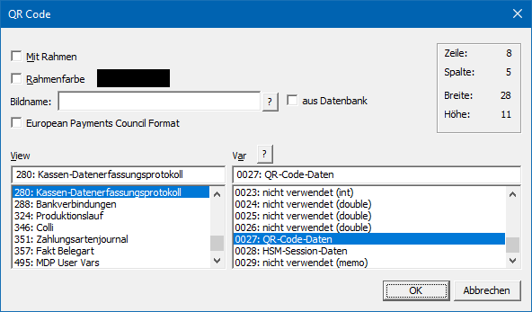

Ø QR Code
Mit der Funktion "QR Code" kann der Inhalt einer Variable als QR Code ausgegeben werden.
Hinweis
Um die Funktionalität des QR Codes auch in der WinLine mobile verwenden zu können, müssen die Dateien "Gma.QrCodeNet.Encoding.dll" und "MesoQREncoder.exe" in das WinLine Server-Verzeichnis kopiert werden (gleiche Vorgehensweise wie bei der Datei "mesospool.exe").
Eigenschaftsfenster "QR Code"

Ø Mit Rahmen
Durch Aktivieren dieser Option wird ein Rahmen um das Element gezeichnet.
Ø Rahmenfarbe
Mit dieser Option kann eine Rahmenfarbe angegeben werden.
Ø Bildname
Soll innerhalb des QR Codes ein Bild dargestellt werden, so kann an dieser Stelle die Datenquelle der Grafik angeben werden. Falls der Dateiname nicht bekannt ist, kann - analog dem Matchcode der WinLine Programme - mit einem Klick auf das Fragezeichen nach der Grafik gesucht werden. Es empfiehlt sich, alle eingebundenen Grafiken in einem zentralen Verzeichnis (z.B. am Server) zu speichern oder in den Systemtabellen der WinLine zu verwalten.
Hinweis
Mit Hilfe der Option "aus Datenbank" wird gesteuert, ob das
Bild in einem Windows-Verzeichnis liegt oder sich in der WinLine-Systemdatenbank
befindet. Dementsprechend wird auch der Matchcode per Icon  dargestellt.
dargestellt.
Ø aus Datenbank
In der WinLine gibt es die Möglichkeit die Grafikdateien zentral in der SQL-Datenbank (Systemdatenbank) abzulegen (nähere Informationen dazu entnehmen Sie bitte dem WinLine START-Handbuch, Kapitel "Grafiken importieren"). Mit dieser Option wird festgelegt, dass die anzudruckende QR Code-Grafik eben aus dieser Datenbank gedruckt wird.
Ø European Payments Council Format
Im Standard wird der QR Code mit dem Fehlerkorrektur-Level "H" (High; 30 % der Codewörter / Daten können wiederhergestellt werden) erzeugt. Für die Erstellung eines EPC-QR Codes wird gefordert das Level "M" (Medium; 15% der Codewörter / Daten können wiederhergestellt werden) zu verwenden, was durch Aktivierung dieser Option geschieht.
Achtung
In einem QR Code des Levels "M" kann technisch keine Bild dargestellt werden. Aus diesem Grund wird durch Aktivierung dieser Option der Bereich "Bildname" ausgeblendet.
Hinweis
Ein EPC-QR Code ist ein vom European Payments Council standardisierter Datensatz, der alle Daten für eine SEPA-Überweisung enthält und mittels QR-Codierung maschinenlesbar ist. Der Aufbau ist der folgenden Seite zu entnehmen und kann mittels VB-Formel erstellt werden:
Beispiel
Mit Hilfe einer VB-Script-Formel wird der EPC-Datenaufbau generiert, welcher in der weiteren Folge per Funktion "QR Code" als EPC-QR Code ausgegeben werden soll. Hierbei sind einige Angaben fix und andere variabel.
ü Formel
QR = "BCD" & chr(10)
& (chr13) 'Angabe des Service Tag
(fix)
QR = QR & "002" & chr(10) & (chr13) 'Angabe der Version (fix)
QR = QR & "1"
& chr(10) & (chr13) 'Angabe der
Zeichencodierung (fix)
QR = QR & "SCT" & chr(10) &
(chr13) 'Angabe von SEPA Credit Transfer Angabe
(fix)
QR = QR & "XXXXXXXXXXX" & chr(10) & (chr13)
'Angabe der BIC der Empfängerbank (eigene
Daten)
QR = QR & "Toys and More GmbH" & chr(10) &
(chr13) 'Angabe des Namens vom
Zahlungsempfänger (eigene Daten - maximal 70 Zeichen)
QR = QR &
"DE12345678900000987654" & chr(10) & (chr13) 'Angabe der Internationale Bankkontonummer (IBAN) des
Zahlungsempfängers (eigene Daten)
QR = QR & "EUR" &
replace(cstr(Value(0,271)),",",".") & chr(10) & (chr13) 'Angabe des Zahlungsbetrags (variabel - Format
"EUR#.##")
QR = QR & "" & chr(10) & (chr13) 'Angabe des Zwecks (vierstelliger Buchstabencode,
optional)
QR = QR & "" & chr(10) & (chr13) 'Angabe der Referenz (strukturierter 35-Zeichen-Code gem.
ISO 11649 RF Creditor Reference, optional)
QR = QR &
Value(500,351) & chr(10) & (chr13) 'Angabe des Verwendungszwecks (variable -
unstrukturierter maximal 140 Zeichen langer Text)
QR = QR & ""
'Angabe eines Hinweises an den Nutzer
(optional)
ResultValue = QR 'Das Ergebnis aller Zeilen inklusive Zeilenumbruch wird
als Result abgestellt und kann somit an eine Variable übergeben
werden
Ø View / Var
Über die Auswahllisten können die View (d.h. die SQL-Tabelle)
und die Variable (d.h. die SQL-Spalte in einer Tabelle) bestimmt werden, welche
ausgegeben werden soll. Mit Hilfe des Icons kann das Fenster "Variable suchen"
geöffnet werden. In diesem ist es möglich per Volltextsuche nach Variablen zu
suchen.
Hinweis
Weiterführende Information zum Einfügen von Variablen sind dem Kapitel Einfügen von Variablen zu entnehmen.